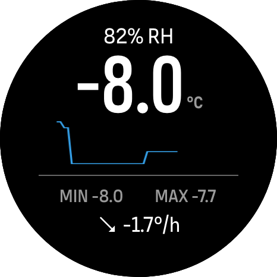

Suunto AirTemp
Real air temperature and humidity
from a Bluetooth sensor off your wrist.
- Big 0.1° reading and trend per hour
- 1-hour graph, exercise min and max
- Saved to your exercise
Independent app, not affiliated with or endorsed by Suunto.
Real air temperature and humidity
from a Bluetooth sensor off your wrist.
Independent app, not affiliated with or endorsed by Suunto.
